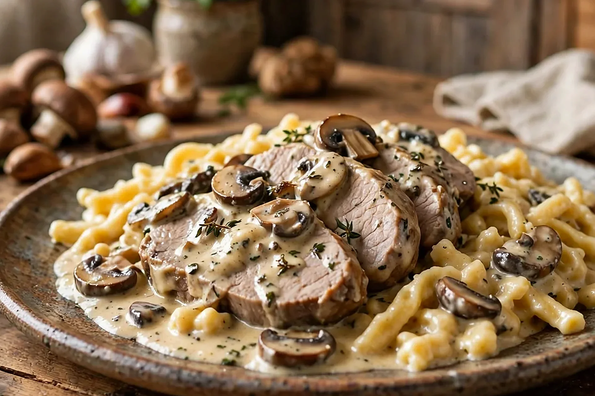

Geschnetzeltes Züricher Art mit Spätzle
Dieses Gericht ist für uns ein kleines Festessen: zartes Kalbfleisch in cremiger Rahmsoße mit Champignons, dazu weiche, hausgemachte Spätzle. Es sieht nach viel Aufwand aus, steht aber schneller auf dem Tisch, als man denkt.

Inhaltsverzeichnis
Zutaten
Zubereitung
- Für die Spätzle Mehl, Eier, Wasser, Salz und Muskat zu einem zähflüssigen Teig verrühren, bis er Blasen wirft. Ca. 10 Minuten ruhen lassen.
- Reichlich Salzwasser zum Kochen bringen. Den Teig portionsweise durch eine Spätzlepresse oder einen Spätzlehobel ins Wasser geben. Sobald die Spätzle oben schwimmen, mit einer Schaumkelle herausnehmen, abtropfen lassen und in Butter schwenken. Warm halten.
- Die Champignons in Scheiben schneiden, die Zwiebel fein würfeln. Das Fleisch trocken tupfen und mit Salz und Pfeffer würzen.
- Die Butter in einer großen Pfanne stark erhitzen und das Fleisch portionsweise je ca. 2 Minuten scharf anbraten. Herausnehmen und warm stellen.
- Champignons und Zwiebel im Bratfett ca. 4–5 Minuten braten. Mit Mehl bestäuben, kurz anschwitzen und mit Weißwein ablöschen.
- Brühe und Sahne dazugießen und die Soße ca. 5 Minuten leicht köcheln lassen, bis sie cremig ist. Mit Salz und Pfeffer abschmecken.
- Das Fleisch mit dem ausgetretenen Saft zurück in die Soße geben und nur kurz erwärmen – nicht mehr kochen, damit es zart bleibt.
- Das Geschnetzelte mit Petersilie bestreuen und zusammen mit den Spätzle servieren.

Tipp
Das Fleisch unbedingt portionsweise und sehr heiß anbraten – liegt zu viel auf einmal in der Pfanne, kocht es im eigenen Saft statt zu bräunen. Wer keinen Weißwein verwenden möchte, ersetzt ihn durch Brühe und einen Spritzer Zitronensaft.
📌 Mehr Rezept-Ideen findest du auf unserem Pinterest-Profil:
Lecker Rezepte auf Pinterest
Lecker Rezepte auf Pinterest